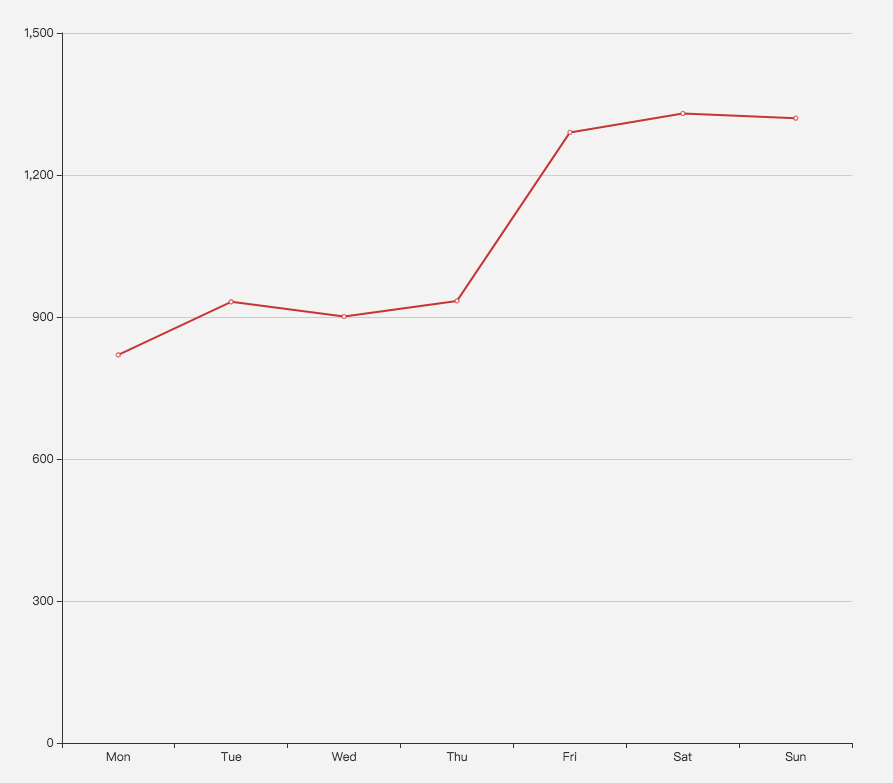
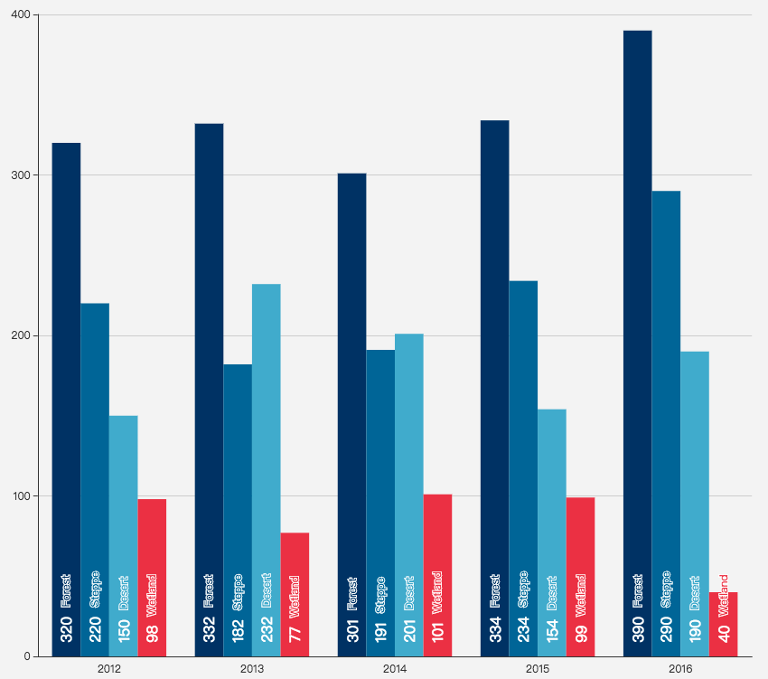
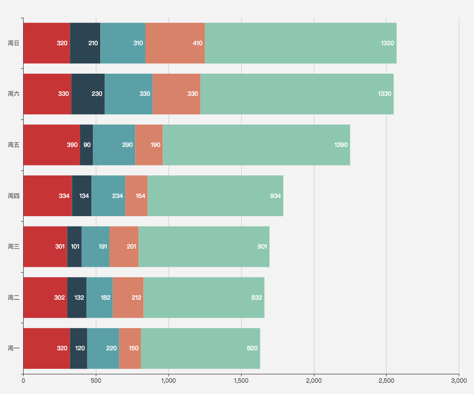
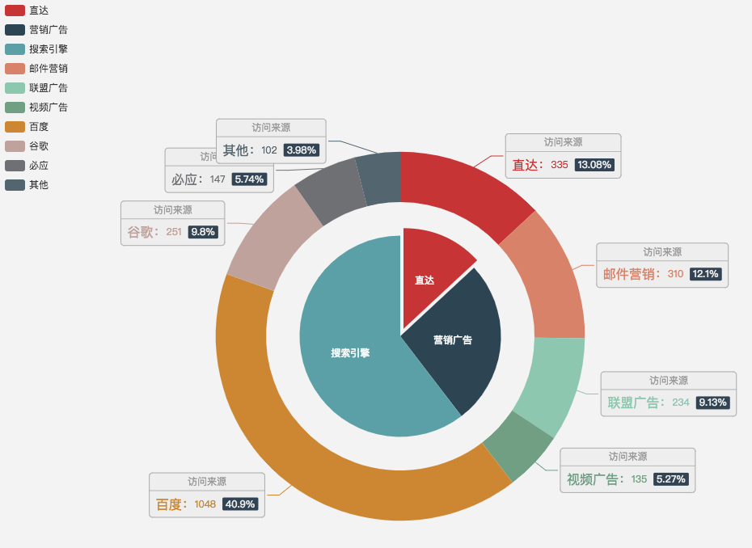
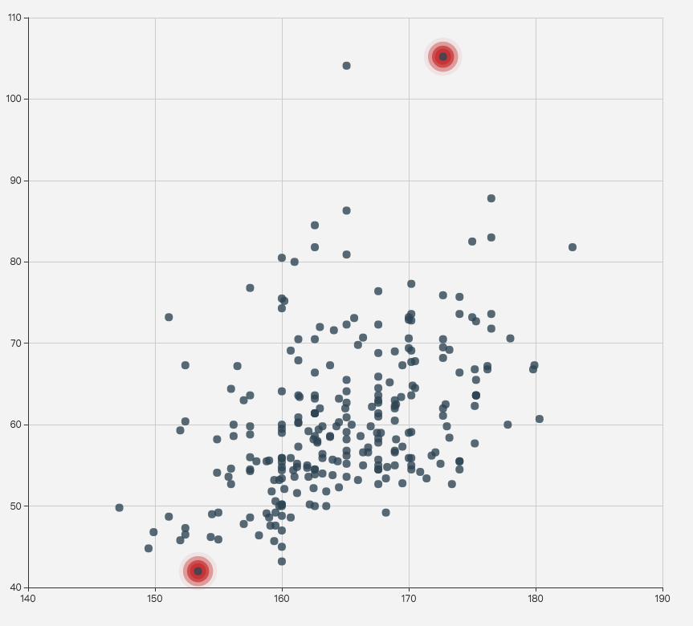
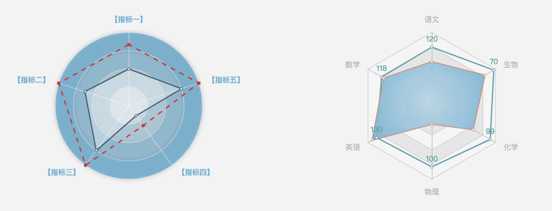

最近公司在做的项目，需要给一个传统企业做数据分析，而分析结果则以app的形式进行展示。做起来感觉千头万绪焦头烂额，才发现之前觉得简单的可视化，其实没有这么简单。
传统企业一般有相当多的报表，好一点的是用excel存着，附以大量的数据和公式；差一点的则全是纸质了。需要对它进行数据分析，已经是一个大问题：
如何从令人头晕的密密麻麻的数据中，提炼出重要的逻辑，使得数据可视化的展示，既简单直白，有种“故事”的感觉，又准确可靠，还能够符合用户的需求。
如果不是在网页上，而是在app上展示，那么又需要加上一个新问题：
如何在app有限的屏幕面积上，展示那么多的数据。在看数据的时候，用户往往会有更深入了解的需求，那么如何表达这种层级的关系。
一个个问题来，首先第一个问题。
我认为，要能讲故事，首先你得了解讲故事需要用到的语法。而各种数据图表的类型，以及它们适用的场合，就是这样的一个“语法”。
所以我们先了解一下各种数据图表的类型。
折线图（Line）：

折线图可以表示趋势，或者某个量（y轴）跟随另一个量（x轴）的变化情况。一般表示趋势的居多，这时候x轴的值其实和y轴无关。
2条或以上的折线，一般表达2个或多个的趋势比较，这个比较当然是逻辑上有联系的，比较才有意义，不能关公比秦琼。2条以上折线的典型例子是控制变量法做实验的AB测试。
折线和y轴以及x轴连接，形成一个闭合的面积，就变成了堆栈折线图，堆栈折线图代表了积分，也就是积分有意义的情况下，可以这么使用。比如速度的积分是路程。
多个堆栈折线图，就可以看出积分结果的高低了，有点变形的饼图的意思。
总结：我感觉折线图的重点是这条线本身，其次是与其他线的比较（对比条形图）。折线图给人比较大概的感觉，看整体趋势，细节却不够清晰。
条形图（Bar）：

条形图感觉是变化最多的图表种类，它既可以和折线图互换，表达类似的数据，也可以和折线图共存（因为都有x轴和y轴）。
条形图更关心的是个体，这里个体指的是x轴上的一小段区划。如果一段区划上有多个条，比如上面的图，那么表示某一年，4个个体的数量的比较。如果一段区划上只有一条，那么可以和折线图互换的，虽然数据相同，但是两者表达的感觉还是不同的。折线图倾向于整体趋势，条形图倾向于细节。

堆叠条形图适用于一个条由多个数据组成，这样它既可以表示一个条的数量，又可以表示一个条内，部分与整体的关系。一个条，可以转化为一个饼图。
饼图（Pie）：

饼图的意义就相对单一一些啦，表达部分与整体的关系，特别是部分占整体多少份额。
散点图（Scatter）：

散点图表达的是大量的离散的数据，并且通过观察这些离散的数据，得到一个统计结果。散点图和统计学联系非常紧密，可以说统计上面的概念和公式都可以应用到散点图上。
这样说也许不准确，其实是先有的散点，然后再有的统计，同时有的散点图。
雷达图（Radar）：

雷达图我见得最多的地方是游戏里，表达一个球员或武将的能力值。雷达延伸越远，表示能力越强；雷达图形越圆润，表示各项能力比较平均；雷达图形越尖锐，表示有长处有短处。
所以雷达图，表示对某个对象的评价、评分。
未完还会待续。